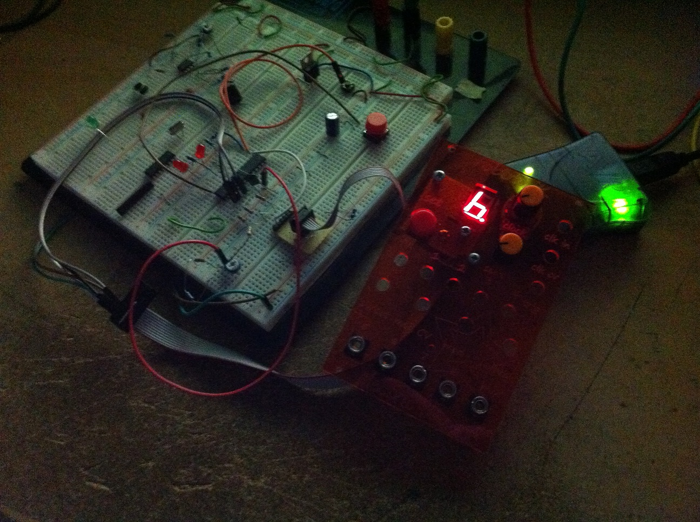
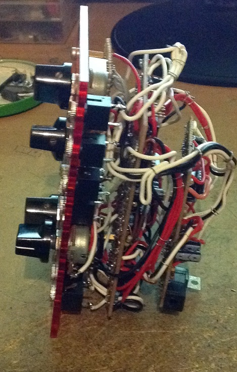
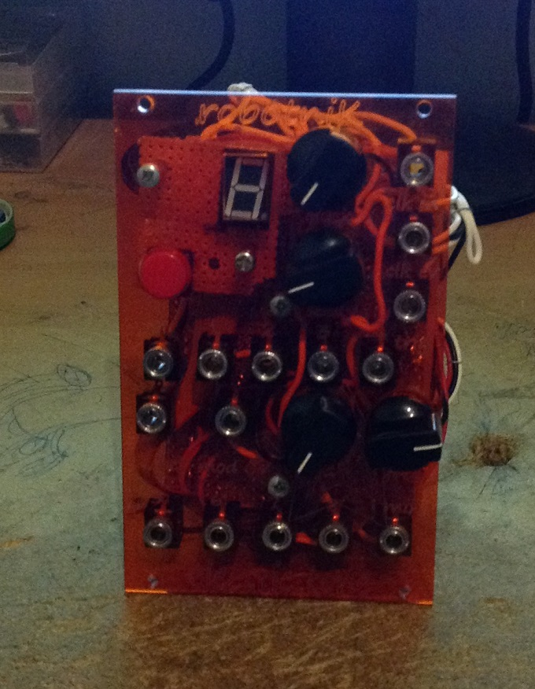

ROBOTNIK
Robotnik is a strange eurorack module based on the idea of Linear Feedback Shift Register.

The top half is externally clocked at low rate and produces pseudo-random output. The length and the bit operation on register are variable.
The operation on the register makes use of the 16bit Fibonacci LFSR .
The register changes are made via the 7segment display and a knob. It goes from a register length of 4Bit to 16bit, and the sofware changes the tap used for the operation
The bottom half has the same principle but is internally clocked at audio rate creating very particular
8bit noise sound, largely used in video game console. The less bit in the register the higher the pitch, the more bit the more random
(and noisy) the sound will be.
{kind=link}
There's no much more stuff going on the lower half on the module. The frequency can be modulated by external sources at that's it. On the other hand, the upper half has more internal "random" facilities with clock input, clock divider, trigger input, and seed input. When a trigger is received the 2nd output is replaced by another register of variable length for one total cycle (for instance, if the register is set to 5bit, it takes 32clocks). Few other things are present that I can't recall without going into the code. The electronic part is rather simple as the work is mostly done in software. At the time a ATMEGA328P was used. BJT transistors are used to triggers the micro pins. CD4050 buffers are used to buffer the microcontroller pins (we're in modular world, don't know what may happen). Some op-amps are here to add and scale voltage before the ADC. To save microcontroller pins, shift registers are used to output the signals It turns out that the only 7segments can lead to confusing editing and considering the very nature of the module (randomness) the editing may left someone doubtfull to the change the user juste made. Although short register length can be recognized, longer ones tend to let puzzled.
 {kind=link}
{kind=link}
However, the module is interesting to bring odd rythmic patterns although almost no repeatable due to its higly randomness (which is a thing odd to complaint about when the module was intetend for that very purpose). It is an interesting idea that maybe deserves a better user interface.
SCHEMATIC .